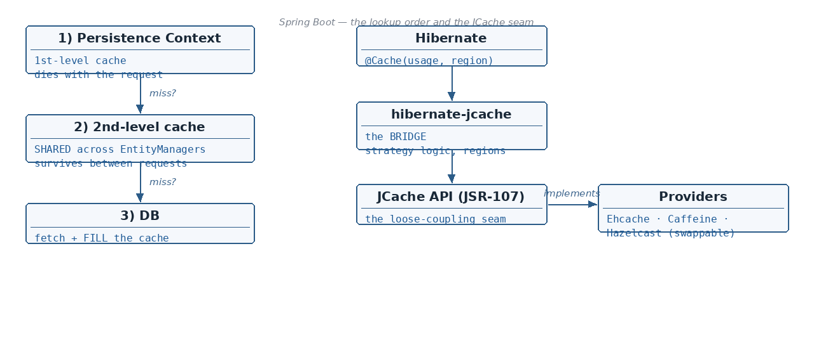

What the 2nd-level cache is and where it sits between the Persistence Context and the DB · The 3 dependencies…
☕ 8 min read · 🎬 Video walkthrough · 📊 UML diagram · 💻 Runnable code
⚡ In a nutshell — What the 2nd-level cache is and where it sits between the Persistence Context and the DB · The 3 dependencies (ehcache, hibernate-jcache, javax cache) and the exact role of each · Enabling the cache in application.properties and with @Cache on an entity · Regions — logical grouping of cached data, configured in ehcache.xml
The 1st-level cache (Persistence Context) dies with its EntityManager — i.e. with the HTTP request. The 2nd-level cache sits behind it and is shared across all EntityManagers, so a value cached by one request can be served to the next:

How it behaves:
Add these to pom.xml:
<!-- 1) org.ehcache : the actual cache provider (stores the data) -->
<dependency>
<groupId>org.ehcache</groupId>
<artifactId>ehcache</artifactId>
</dependency>
<!-- 2) org.hibernate : hibernate-jcache (bridge between Hibernate & JCache) -->
<dependency>
<groupId>org.hibernate.orm</groupId>
<artifactId>hibernate-jcache</artifactId>
</dependency>
<!-- 3) javax cache : the JCache API interfaces (JSR-107) -->
<dependency>
<groupId>javax.cache</groupId>
<artifactId>cache-api</artifactId>
</dependency>
Who does what:
javax.cache : cache-api — provides the interface for JCache; Hibernate interacts with these APIs. The JCache API interface provides APIs like getCache, postCache, ... It helps to achieve loose coupling: we can change from Ehcache to some other JCache-compliant caching provider without changing code.org.hibernate : hibernate-jcache — Hibernate-specific caching logic comes with this. Like when we use the @Cache annotation over an entity with a CacheConcurrencyStrategy, specific logic needs to be executed — this library helps us with that. It acts as a bridge: it teaches Hibernate how to talk with the JCache API.org.ehcache — the real implementation that actually stores and evicts the cached data.# turn the 2nd-level cache on
spring.jpa.properties.hibernate.cache.use_second_level_cache=true
# which region factory Hibernate should use (comes from hibernate-jcache)
spring.jpa.properties.hibernate.cache.region.factory_class=org.hibernate.cache.jcache.JCacheRegionFactory
# which JCache provider to use } Imp
spring.jpa.properties.hibernate.javax.cache.provider=org.ehcache.jsr107.EhcacheCachingProvider
# optional: point to the ehcache.xml resource
spring.jpa.properties.hibernate.javax.cache.uri=classpath:ehcache.xml
# optional: debug what the cache is doing
logging.level.org.hibernate.cache=DEBUG
@Entity
@Cache(usage = CacheConcurrencyStrategy.READ_WRITE,
region = "userDetails")
public class UserDetails {
@Id
@GeneratedValue(strategy = GenerationType.IDENTITY)
private Long id;
private String name;
}
Region
Putting the region settings in ehcache.xml is the clean and better approach:
<ehcache>
<cache alias="userDetails"
maxElementsInMemory="100"
timeToLiveSeconds="60"
evictionStrategy="LIFO"/>
</ehcache>
JCacheRegionFactory — it takes care of eviction, memory management and all, per region, using this file.READ_ONLY — None — updates throw an exception — Static data that never changesREAD_WRITE — Shared lock on read, exclusive lock on update — Read + write data needing correctnessNONSTRICT_READ_WRITE — No lock at all; invalidate after commit — Heavy-read apps that tolerate stale readsTRANSACTIONAL — Read lock + write lock, cache updated in txn — Strict consistency between cache and DBThe get path:
The update path — this lock flow is the heart of READ_WRITE:
Added: the
@Cacheannotation above only caches entities looked up by ID (find()). Query results and collections need their own switches — and sometimes you must evict by hand.
The 2nd-level cache does not help a JPQL query like ... WHERE age > 30 — that needs the query cache, which is off by default:
spring.jpa.properties.hibernate.cache.use_query_cache=true
Then mark each query you want cached as cacheable (per query, not global):
List<UserDetails> adults = entityManager
.createQuery("SELECT u FROM UserDetails u WHERE u.age > :age", UserDetails.class)
.setParameter("age", 30)
.setHint("org.hibernate.cacheable", true) // HINT_CACHEABLE
.getResultList();
With Spring Data JPA the same thing is a @QueryHints on the repository method:
@QueryHints(@QueryHint(name = "org.hibernate.cacheable", value = "true"))
List<UserDetails> findByAgeGreaterThan(int age);
Two things to know:
A cached entity does not cache its collections. Annotate the collection field too (it gets its own region):
@Entity
@Cache(usage = CacheConcurrencyStrategy.READ_WRITE)
public class UserDetails {
@OneToMany(mappedBy = "user")
@Cache(usage = CacheConcurrencyStrategy.READ_WRITE) // separate region: UserDetails.orders
private List<Order> orders;
}
TTL handles time-based expiry, but after an out-of-band change (bulk update, another service writing to the same DB) the cache is silently stale. The JPA Cache API evicts on demand:
Cache cache = entityManager.getEntityManagerFactory().getCache();
cache.evict(UserDetails.class, 1L); // evict one entity
cache.evict(UserDetails.class); // evict the whole region
cache.evictAll(); // nuke the entire 2nd-level cache
Good to know: bulk JPQL/native updates (
UPDATE UserDetails SET ...) bypass both the Persistence Context and the 2nd-level cache — after one, evict the affected region or you will serve stale entities until TTL saves you.
Controls what Hibernate does to your schema at startup/shutdown:
none — ✗ / ✗ / ✗ — Does nothing to the schema — Productionupdate — ✓ / ✓ / ✗ — Updates schema without deleting any existing data or schema — Development environmentvalidate — ✗ / ✗ / ✗ — At startup, matches entities against the DB schema; throws an exception on mismatch — Prod / staging safety checkcreate — ✓ / ✓ / ✓ — Drops and re-creates the schema during application startup — Throwaway local runs, testscreate-drop — ✓ / ✓ / ✓ — Creates the schema at startup and drops it at application shutdown — Integration tests, demos# production — never let Hibernate touch the schema
spring.jpa.hibernate.ddl-auto=none
# development — evolve the schema, keep the data
spring.jpa.hibernate.ddl-auto=update
# tests — fresh schema every run, cleaned up afterwards
spring.jpa.hibernate.ddl-auto=create-drop
Good to know: never use
createorcreate-dropin production — both drop the schema, which means all your data is gone. For production usenone(orvalidateas a safety net) and manage schema changes with a migration tool like Flyway or Liquibase.
@Cacheable abstraction over the 2nd-level cache — pod-local caches diverge across replicas; 2nd-level shines for single-node or read-mostly reference data.ddl-auto policy: update/create are dev-only toys. Production = validate (or none) + Flyway/Liquibase versioned migrations reviewed like code.cache-api (JCache interfaces → loose coupling), hibernate-jcache (bridge; @Cache / strategy logic; JCacheRegionFactory), ehcache (actual provider — swappable with Caffeine/Hazelcast).use_second_level_cache=true, region.factory_class=...JCacheRegionFactory, javax.cache.provider=...EhcacheCachingProvider.@Cache(usage = ..., region = "userDetails"); region = logical group with its own eviction / TTL / size / concurrency — configured cleanly in ehcache.xml.use_query_cache=true + org.hibernate.cacheable hint per query); stores only IDs, so pair it with the 2nd-level cache; any table write invalidates its cached queries (update-timestamps cache).@Cache on the field; evict manually via entityManagerFactory.getCache().evict(...) — especially after bulk JPQL/native updates, which bypass both caches.ddl-auto: none (prod) · update (dev, keeps data) · validate (match-or-throw) · create (drop + recreate at startup) · create-drop (also drops at shutdown).Next topic: end of this notebook — pages 1–80 are covered. Revise from Topic 01 and go build something.
👏 Found this useful? Give it a few claps so more developers discover it, and follow for the whole series — every article ships with a UML diagram, runnable code, a narrated video, and a companion PDF. Happy building! 🚀